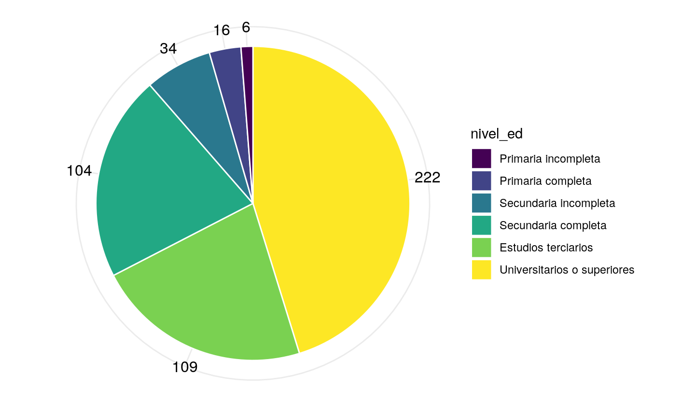

04 septiembre, 2019
Representaciones gráficas de frecuencias
Gráfico de barras
La siguiente es una tabla de distribución de frecuencias para la variable nivel máximo de estudios alcanzados para los asistentes a CEPRAM.
| Nivel de estudios | f | f' | F | F' |
|---|---|---|---|---|
| Primaria incompleta | 6 | 0.01 | 6 | 0.01 |
| Primaria completa | 16 | 0.03 | 22 | 0.04 |
| Secundaria incompleta | 34 | 0.07 | 56 | 0.11 |
| Secundaria completa | 104 | 0.21 | 160 | 0.33 |
| Estudios terciarios | 109 | 0.22 | 269 | 0.55 |
| Universitarios o superiores | 222 | 0.45 | 491 | 1.00 |
Gráfico de barras
- Podemos represetar gráficamente las frecuencias absolutas y relativas simples mediante un gráfico de barras.
Frecuencia absolutas simples para nivel de estudios
Frecuencia relativas simples para nivel de estudios
Gráfico de tortas
- Podemos representar la misma información mediante un gráfico de tortas

Frecuencia absoluta simple para nivel de estudios
Porcentajes para nivel de estudios
Gráficos de torta
- Si bien los gráficos de torta se encuentran enormemente difundidos, su utilización en la actualidad es desaconsejada.
- Su interpretación es ambigüa. No permite detectar diferencias sutiles.
- No es un buen método para transmitir información.
- Se puede reemplazar fácilmente por un gráfico de barras.
Histograma
- Para variables continuas con datos agrupados.
- Es similar al gráfico de barras, pero sin espacio entre las barras.
Ejemplo
- Realizamos una tabla de distribución de frecuencias para la variable edad en la base de CEPRAM.
| edad_cat | f | f' | 2 | F | F' |
|---|---|---|---|---|---|
| [50,55] | 8 | 0.02 | 2 | 8 | 0.02 |
| (55,60] | 33 | 0.08 | 2 | 41 | 0.09 |
| (60,65] | 108 | 0.25 | 2 | 149 | 0.34 |
| (65,70] | 132 | 0.30 | 2 | 281 | 0.64 |
| (70,75] | 85 | 0.19 | 2 | 366 | 0.84 |
| (75,80] | 46 | 0.11 | 2 | 412 | 0.94 |
| (80,85] | 24 | 0.05 | 2 | 436 | 1.00 |
| (85,90] | 2 | 0.00 | 2 | 438 | 1.00 |

Frecuencias de edad para las personas que asisten al CEPRAM